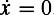

|
| |||||||||||||
|
|
||
Assuming that the matrix A has full rank, then the point x = 0is the only point in the state space that satisfies the equilibrium condition . The point x = 0 is called an equilibrium point. Note that the state will not move from an equilibrium point. If the initial condition is x(t0) = 0, then x(t) will remain at 0 for all time. In this section we discuss the stability of the origin of an LTI system.
We begin by defining a few notions of stability. An equilibrium point xe (in the case of LTI systems xe = 0) is said to be stable if for every ε > 0 there exists a δ > 0 such that whenever the initial condition satisfies ||xe − x(t0)||<δ the solution x(t) satisfies ||xe − x(t)||< ε for all time t > 0. In other words, stable means that if the initial condition starts close enough to the equilibrium, then the solution will never drift very far away. xe is said to be asymptotically stable if it is stable and ||xe − x(t)|| → 0 as t → ∞. Likewise, xe is said to be unstable if it is neither stable nor asymptotically stable.
It is worth noting that for LTI systems, the stability properties are global. If they hold on any open subset of the state space, then they hold everywhere. Stability can be characterized in terms of the eigenvalues of the matrix A,as stated in the following theorem:
Consider the LTI system stated in equation (J.3), and let λi ,i ∊{1, 2,…, n} denote the eigenvalues of A. Let re(λi) denote the real part of λi Then the following holds:
xe = 0 is stable if and only if re(λi) ≤ 0 for all i.
xe = 0 is asymptotically stable if and only if re(λi) < 0 for all i.
xe = 0 is unstable if and only if re(λi) > 0 for some i.
Consider the mass-spring-damper example. The eigenvalues of A are
When the damping term is positive, the real parts of the eigenvalues are negative and the system is asymptotically stable. Figure J.2 shows two different representations of the trajectory of the mass-spring-damper system with m = 1, k = 5, and γ = 1. The figure on the left shows the values of x1 and x2 plotted as functions of time. As expected for an asymptotically stable system, both converge to zero. The figure on the right shows the trajectory in state space by plotting x2 vs. x1. This is sometimes referred to as a "phase plane" plot. The direction in which the trajectory flows is depicted by arrows. Here the trajectory starts at the initial condition and spirals into the origin. When the damping is zero, the system solution is a bounded oscillation and hence is stable but not asymptotically stable. Figure J.3 plots the time and phase plane representations of the stable trajectory that results when m = 1, k = 5, and γ = 0. Note that in the phase plane the periodic oscillation becomes a closed loop. When the damping is negative the damping term actually adds energy to the system, creating an oscillation that grows without bound. Time and phase plane plots for the case where m = 1, k = 5, and γ =−0.4 are shown in figure J.4.
|
|
||
|